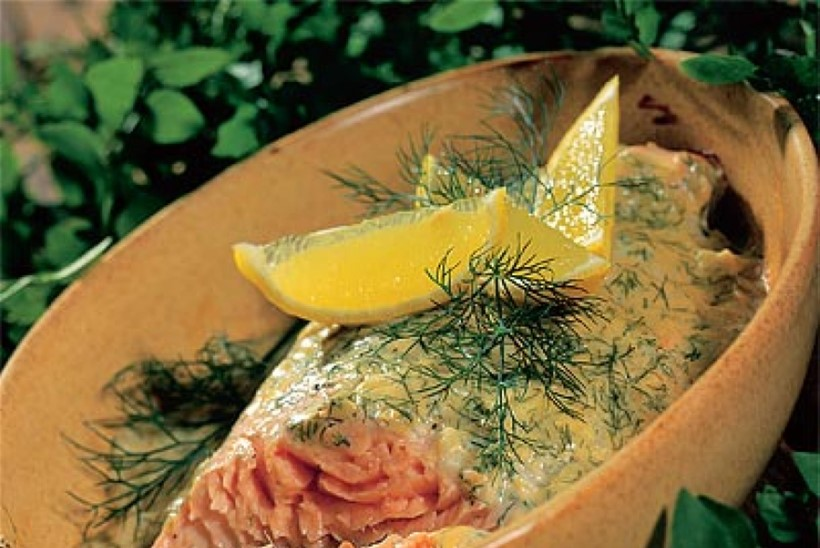

oven baked salmon

Description
A delicious and juicy oven baked salmon covered with mayonaise and lemon.
what do i need?
- salmon 700g
- mayonaise 300ml
- 1 lemon
- salt
- pepper
- dill
How to prepare?
- preheat oven to 170 degrees
- place salmon fillet in a large oven safe pan
- season fillet with salt and pepper to taste
- cover with slices of lemon
- cover everything generously with mayonaise and cover dish with tinfoil
- cook 30 minutes then remove tinfoil and cook another 15 minutes
- cut to portions and serve with smashed potatoes or cooked veggies